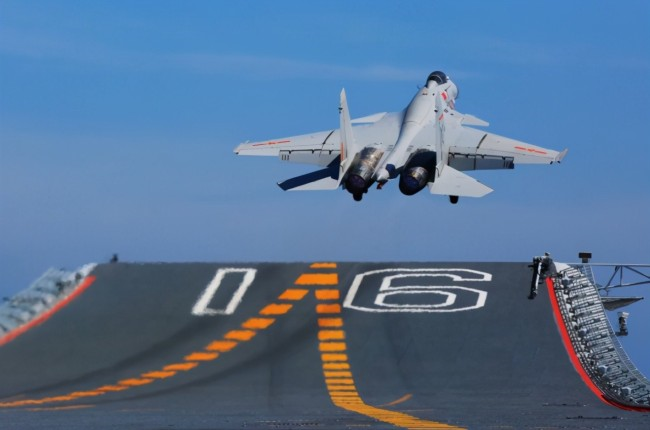
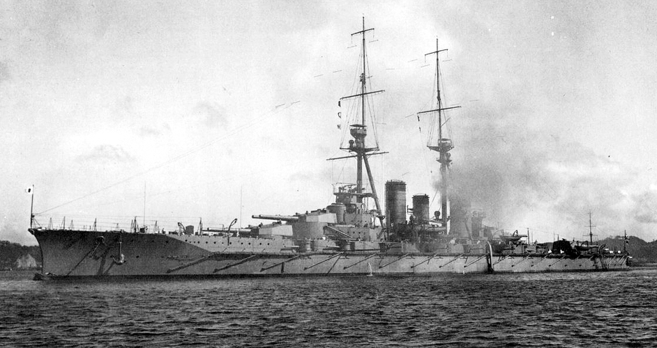
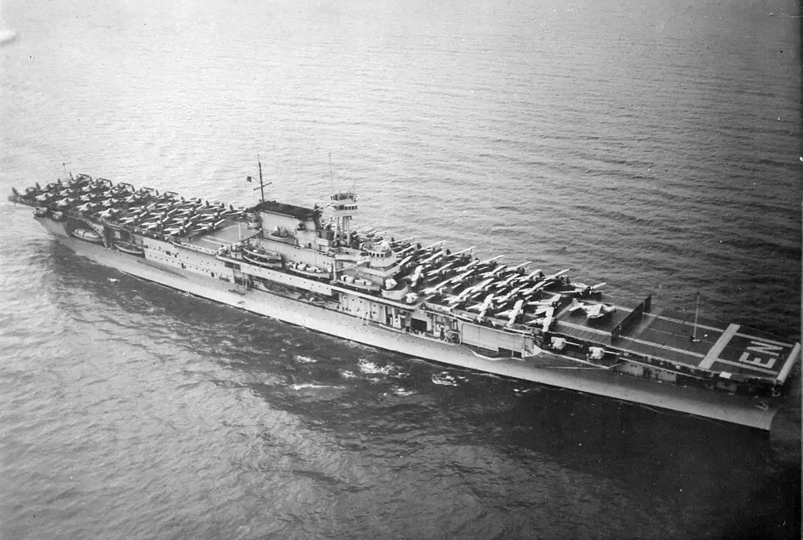

“挑浪雄鹰”——舰载机

*从辽宁舰上起飞的歼-15舰载机
简介
舰载机是航空母舰的主要作战工具，其作战性能对航空母舰的威力有着重要的影响。 舰载机不仅能以多批次的战斗群起降于大型航空母舰上，而且也能从中、小型舰艇上起降，掠海飞行， 以单机或多机活跃在大洋上空，执行护航、反潜、反舰以及超视距引导等作战任务。
发展历史
早期海军将水上飞机装于军舰上，这中飞机可以在水上起降，便于操作，彼时 的舰载机多起到侦察、情报传递等辅助性工作。

*二战时，日本海军艉部装有水上侦察机的“比睿”号战列舰
二战时期，航母逐渐成为海军的绝对力量，舰载机技术逐渐提升，其性能、 武备以及技术都成了各国海军优先发展的对象。

*二战时，美国停满舰载机的“约克城”级航母
时间来到21世纪，中国终于拥有了自己的第一艘现代化航母，可航母只是 一个平台，舰载机的起飞与降落是更为艰巨的挑战。 2012年11月25日12时，随着歼-15“飞鲨”成功在“辽宁”号航母上着舰，人民海军六十多年的舰载机之梦终于成为了现实。 这也标志着，中国第一支舰载航空打击力量，正逐步开始成型。 同时中国也在发展不同种类的舰载机，如武装直升机、无人机。

*准备起飞的歼-15飞行员
相关知识
中国现役护卫舰有歼-15战斗机、直-18、直-9以及俄制卡-28。 同时，舰载无人机的出现让航母轻量化成为可能。